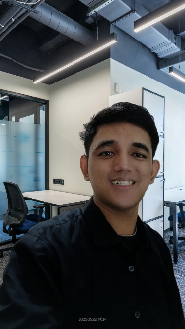

Backend Engineer

Fresh graduate yang antusias di bidang pengembangan backend, dengan pengalaman membangun berbagai API dan layanan backend menggunakan Golang dan Python. Terampil dalam mengelola dan mengoptimalkan database relasional seperti PostgreSQL dan MySQL. Memiliki ketertarikan kuat terhadap pemecahan masalah kompleks serta pengembangan solusi yang efisien, skalabel, dan dapat diandalkan. Siap berkontribusi dalam tim teknologi yang dinamis dan terus berkembang.
Proyek sederhana Todo List API yang dibuat menggunakan Golang dan framework Gin.
Fitur :// Contoh kode untuk mendapatkan semua todo
func GetTodos(c *gin.Context) {
var todos []Todo
DB.Find(&todos)
c.JSON(http.StatusOK, todos)
}Chat API real-time menggunakan Golang, WebSocket, dan PostgreSQL.
Fitur :// Handle koneksi WebSocket
func handleConnections(w http.ResponseWriter, r *http.Request) {
ws, err := upgrader.Upgrade(w, r, nil)
if err != nil {
log.Println("Error upgrading connection:", err)
return
}
defer ws.Close()
mutex.Lock()
clients[ws] = true
mutex.Unlock()
for {
var msg Message
err := ws.ReadJSON(&msg)
if err != nil {
log.Println("Error membaca pesan:", err)
mutex.Lock()
delete(clients, ws)
mutex.Unlock()
break
}
broadcast <- msg
}
}Aplikasi Todo sederhana menggunakan Python Flask.
Fitur :@app.post("/tasks")
def post_task():
data = request.json
tasks = load_tasks()
if not data.get("task") or not data.get("priority") or not data.get("deadline"):
return jsonify({"error": "Missing required fields"}), 400
tambah_tugas(tasks, data["task"], data["priority"], data["deadline"])
return jsonify({"message": "Tugas ditambahkan"}), 201fahmiheykal09@gmail.com
+62 822-9850-3138